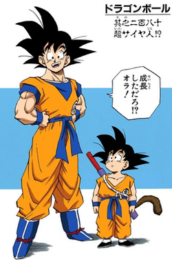
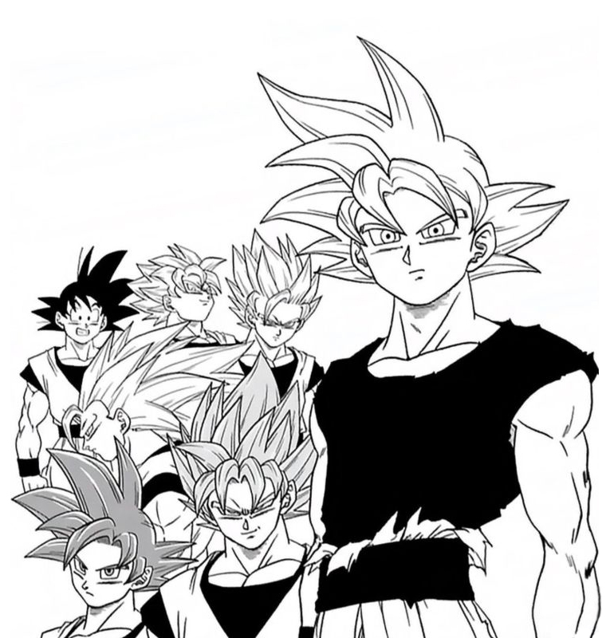

Hola Guapos, Guapas y Guapes, Espero que les guste mi intento de pagina.
Espero que les guste Dragon ball, porque de eso es mi intento de pagina.

Imagenes
En esta seccion pondre imagenes del todo poderoso y guapo.Son Goku
Goku dibujado por Padre Akira Toriyama
Goku dibujado por Toyotaro Deidad, Actual creador y dibuajante del Manga
Videos
Aqui se deslumbraran con dos videos de Padre Goku
VIDEO I
VIDEO II
Audios
En este apartado pondre Frases iconicas del Sensual Goku
Y dejare sus Respectivos Links para que vean el contenido audiovisual completo
Audio I
Link
Audio II
Link
Audio III
Link
Wikipedia
Aqui les dejare la Wikipedia del Todo Poderoso Son Goku
Tabla de transformaciones
Niveles de Poder de Son Goku
| Transformación/Estado | Saga/Introducción | Poder Aproximado (Referencia) | Notas Importantes |
|---|---|---|---|
| Goku Base (Saga Saiyajin) | Dragon Ball Z - Saga Saiyajin | ~416 (Kaioken x1) | Poder latente antes de dominar el Kaioken. |
| Kaioken | Dragon Ball Z - Saga Saiyajin/Namek | Multiplicador (x2, x3, x4, etc.) | Técnica que multiplica temporalmente la fuerza, velocidad y reflejos. Muy exigente para el cuerpo. |
| Super Saiyajin (SSJ) | Dragon Ball Z - Saga de Freezer | 50x Base | La legendaria transformación que supera por mucho a Freezer. Cabello dorado, aura dorada. |
| Super Saiyajin 2 (SSJ2) | Dragon Ball Z - Saga de Cell | 2x SSJ (100x Base) | Más rápido, más fuerte y con rayos alrededor del cuerpo. Alcanzado por Gohan y luego Goku. |
| Super Saiyajin 3 (SSJ3) | Dragon Ball Z - Saga de Buu | 4x SSJ2 (400x Base) | Cabello largo y sin cejas. Drenaje de energía masivo, muy poco eficiente en el tiempo. |
| Super Saiyajin Dios (SSJ God) | Dragon Ball Z: La Batalla de los Dioses / DBS | Poder de Dios (difícil de cuantificar) | Requiere un ritual de 5 Saiyajins justos. Aura rojiza, delgado y más sereno. |
| Super Saiyajin Blue (SSJ Blue) | Dragon Ball Super - Saga de la Resurrección de 'F' | SSJ con Ki Divino | Estado de SSJ con el poder del Ki divino. Aura azul. Mejor control de energía que el SSJ3. |
| Ultra Instinto - Señal (UI - Sign) | Dragon Ball Super - Torneo del Poder | Movimiento autónomo (reacciones inconscientes) | Habilidad de reaccionar y atacar sin pensar. Cabello negro pero con aura plateada y ojos grises. Incompleto. |
| Ultra Instinto Perfecto (UI) | Dragon Ball Super - Torneo del Poder | Dominio completo del movimiento autónomo | Cabello plateado brillante. La forma más poderosa y dominante de Goku vista hasta ahora. Movimientos perfectos e inconscientes. |
| Super Saiyajin Blue Evolved (Vegeta) | Dragon Ball Super - Torneo del Poder | Similar a SSJ Blue pero más allá | Aunque es de Vegeta, a menudo se compara con las formas de Goku. Indica un paso más allá del SSJ Blue. |
| Nota: Los niveles de poder exactos en Dragon Ball son a menudo inconsistentes y sujetos a la interpretación de los fans y creadores. Los multiplicadores son valores canónicos conocidos. La tabla solo incluye algunas de las transformaciones más notables. | |||